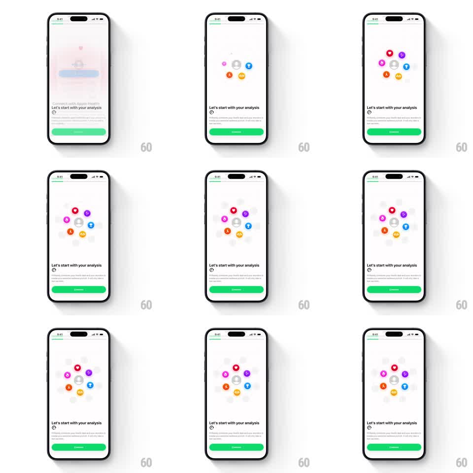

Media
Frame-by-frame

Rebuild this animation 1:1: FitWoody's analysis onboarding - a ring of colorful health icons rotates slowly around a center point while each icon pulses in with a staggered springy scale-up, behind the "Let's start with your analysis" card.

Rebuild this animation 1:1: FitWoody's analysis onboarding - a ring of colorful health icons rotates slowly around a center point while each icon pulses in with a staggered springy scale-up, behind the "Let's start with your analysis" card. ## Integration Integration: stack-agnostic spec - springs given as stiffness/damping, timed motions as duration + curve; map every value to your framework and animation library of choice. ## Scene Light onboarding screen: top progress bar, center ring of ~8 circular health icons (heart, flame, smiley, lightning bolt, drop, star, medal, leaf - each a saturated color on a soft tinted disc) around a muted center badge, then a bottom card with "Let's start with your analysis", subcopy about connecting Apple Health, and a full-width green Continue button. ## Motion spec Pattern: circular rotation + staggered scale-pulse entrances, ~2s entrance then looping. - Entrance: icons pop in one at a time around the ring (scale 0 -> 1.15 -> 1, spring ~380/17, 80ms apart, clockwise from top). - Rotation: the whole ring rotates slowly (~20s per revolution), icons counter-rotating so they stay upright. - Pulse: each icon periodically does a soft scale pulse (1 -> 1.12 -> 1, 400ms), staggered around the ring so one icon pulses at a time in rotation order. - Center badge: gently breathes (scale 1 -> 1.04, 2s alternate) independent of the ring. ## Calibration - Icons stay upright while orbiting - the ring rotates, the glyphs do not. - The pulse reads as a wave traveling around the ring, not random twinkles. ## Reduced motion Static ring, all icons visible; no rotation or pulses. ## Don't miss - Each icon sits on its own pastel-tinted disc matching its glyph color. - The green Continue button and progress bar are static - all motion lives in the ring.